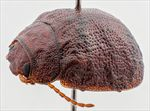
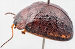
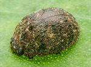
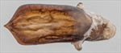
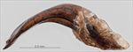
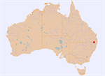

Click on images to enlarge


Male, Bookookoorara, N.E. New South Wales


Male, Bookookoorara, N.E. New South Wales


Male, Bookookoorara, N.E. New South Wales


Aedeagus, dorsal view (Bookookoorara, N.E. New South Wales)


Aedeagus, lateral view (Bookookoorara, N.E. New South Wales)


Distribution
Name
Trachymela sp. Ta101
Reference specimen
2000-161, Boonoo Boonoo, NE New South Wales.
Adult Description
Length: ♂ 6.0–7.0 mm (n=6), ♀ 7.0–7.3 mm (n=3).
Colouration:
- Head: uniformly reddish-brown to (less frequently) very dark-brown (or black), mandibles with black tips; labrum concolorous; antennomeres 1–4 uniformly light- or straw-brown, 5–11 grading darker towards apex, rarely becoming black, darker shade generally confined to distal end and sides of antennomeres.
- Pronotum: uniformly reddish-brown, sometimes (if head is dark-brown) central section of anterior margin broadly bordered in dark-brown or black.
- Scutellum: brown, concolorous with or slightly darker than adjacent region of pronotum.
- Elytra: brown, concolorous with pronotum, with fractionally to noticeably darker, small, raised tubercles and ridges scattered unevenly over much of surface of disc and margin except for the antero-median depression, punctures concolorous with interstices, humeral callus black.
- Venter & Legs: head, prosternum and central regions of mesoventrite and metaventrite black, elsewhere, including legs, dark-brown or reddish-brown, inner surface of elytral epipleura black.
- Cuticular Wax: light-brown, scattered very sparsely and unevenly as small isolated patches over most of dorsal surface.
Morphology:
- Head: rounded, greatest height viewed laterally is clearly in front of middle of elytral margin (PGH: ♂ 49–52% BL, ♀ 49–52% BL); punctures moderately sized (pd ≈ 2 × ef), evenly and densely distributed. Antennae long (AL/BL: ♂ 55–58%, ♀ 39–41%), filiform.
- Pronotum: almost evenly curved transversely with lateral margins very slightly explanate, foveal depression absent or very shallow, an almost round slightly elevated area situated behind each eye, puncturation clearly impressed, concolorous with or very slightly more coarse than those on head and rather evenly distributed in discal area, becoming much coarser from foveal depression to lateral margins, interstices smooth to slightly rough in discal area, never so rough as to obscure punctures. Thickened front margins smoothly join thinner lateral margins in a smoothly rounded right-angle, with lateral margin almost straight or barely curving about 30% of length towards rear margin, then curving more strongly towards posterio-lateral angle.
- Scutellum: smooth and unpunctured.
- Elytra: surface evenly curved transversely over discal region, sometimes slightly explanate at margins, lightly curved longitudinally in anterior half, then slightly more strongly curved, a shallow depression extends across surface just in front of middle, punctures set deeply among the prominent network of raised interstices, smaller punctures scattered among them, small, mostly round verrucae, sometimes with a small puncture in centre, scattered unevenly over much of surface except for antero-median depression, raised interstices form lateral and longitudinal ridges which connect many of the verrucae producing a strongly reticulated surface, verrucae just posterior to and (less often) just anterior to antero-median depression often joined by raised interstices to form irregular transverse ridges, surface continuous under humeral callus. Vertical extension of epipleura moderate (HCE/PW = 0.30–0.33).
- Venter: prosternal process narrowest anteriorly then widening gradually, lightly closed anteriorly, short setae very sparsely distributed over prosternal process and mesoventrite, a single long seta (sometimes a scatter of shorter ones) on anterior and median trochanter; front edge of metaventrite beveled, truncate; inner edge of epipleura lacking setae.
Male Genitalia (Aedeagus):
- Dimensions: very short, quadrate (LPE/BL = 20–24%).
- Dorsal view: shaft with strongly sclerotized margins roughly parallel from junction with basal section to about 80% of distance to apex, from where sides converge in a concave curve to produce a sharp apex, dorsal surface smoothly curved with very short, faint dorso-median channel, tip slightly protruding, ostium small, dorsal ostial processes projecting far forward.
- Lateral view: shaft very thin over much of central and apical section, curved near junction of basal and central section, then almost straight almost to apex, tip slightly deflexed.
Immature Stages
Unknown.
Similar species
Relatively easy to recognize due to the strongly and rather uniformly reticulated and often nitid elytral surface, as well as the black inner epipleura.
Notes
- Distribution & Abundance: This is a relatively rare species (9 specimens examined, 6 ♂, 3 ♀), of which 5 specimens (including all 3 females) were collected under the bark of eucalypts in winter.
- Host Associations: Collected off Eucalyptus pauciflora (snow gum) and two other smooth-barked eucalypt species (one likely E. dalrympleana).
Copyright © 2026. All rights reserved.